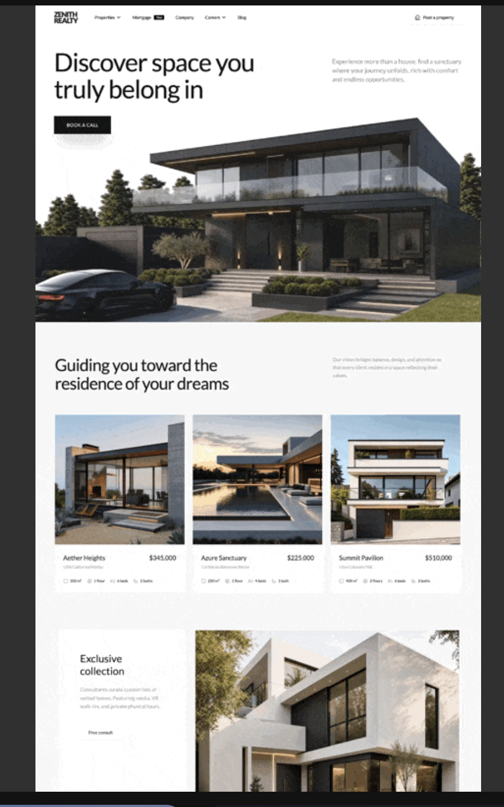

Discover space you
truly belong in
Experience more than a house: find a sanctuary
where your journey unfolds, rich with comfort
and endless possibilities.

Guiding you toward the
residence of your dreams
Our vision brings balance, design, and attention so
that every detail creates an extraordinary
place to call your own.
A selection of illustrative design concepts.
There are no projects to display in this category yet.
Exclusive
by nature
Considered spaces. A quieter kind of sophistication. Exploring natural light, honest materials, and the pleasure of feeling at home.
Discover our approachA place begins
with a conversation.
Every home is personal.
Our process starts with you.
01Listen & discover
+
How do you live? What brings you calm? We begin with your everyday rituals, your ambitions, and the character of the site. Together, we define what home should feel like.
02Explore & refine
+
Ideas take shape through sketches, material studies and spatial exploration. We consider the relationship between light, landscape and each room, refining the design with you.
03Detail & realise
+
From the broadest gesture to the smallest junction, we bring the design into focus. Careful documentation and collaboration guide a considered vision toward a built home.